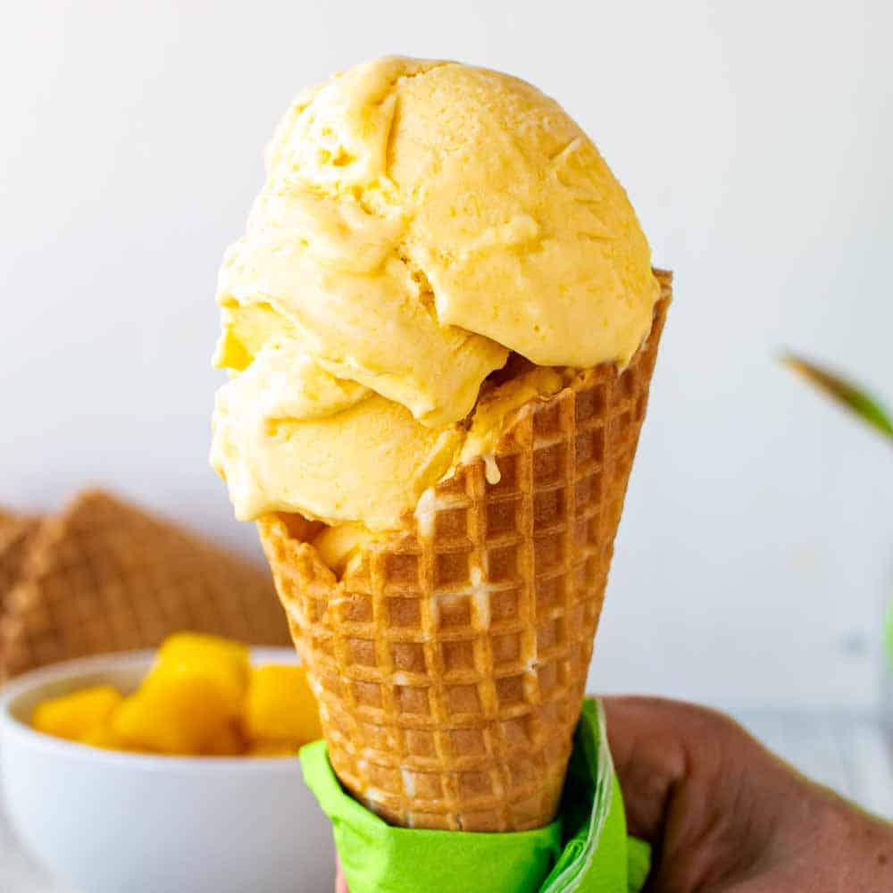
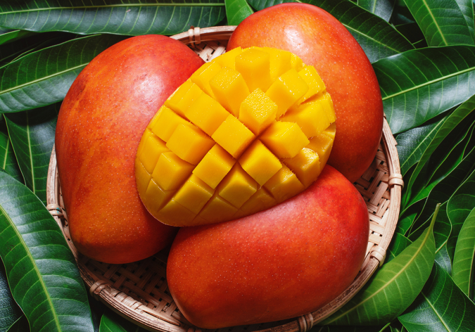
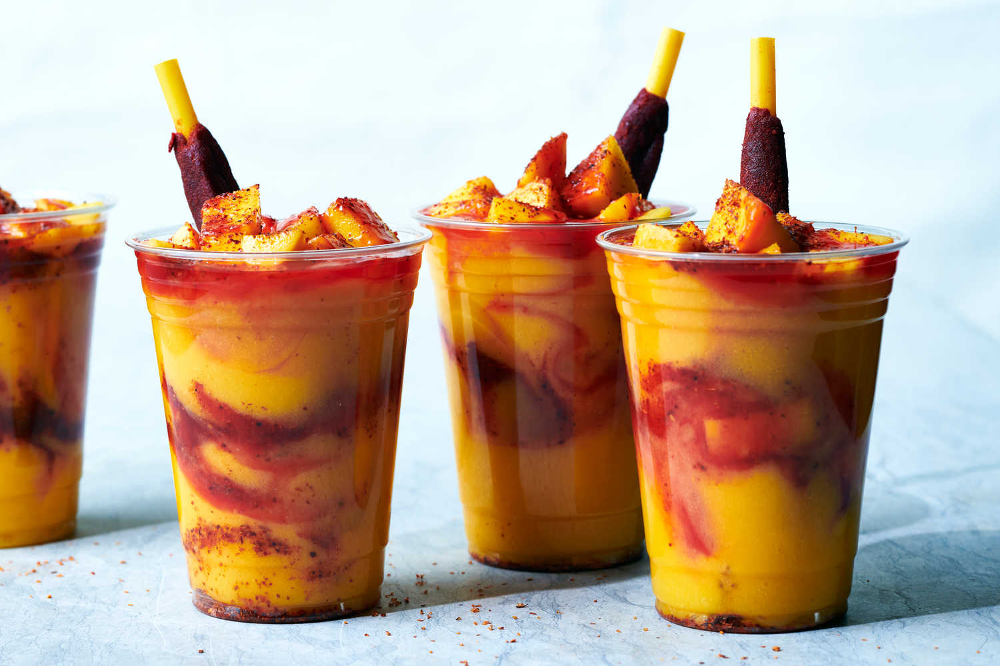
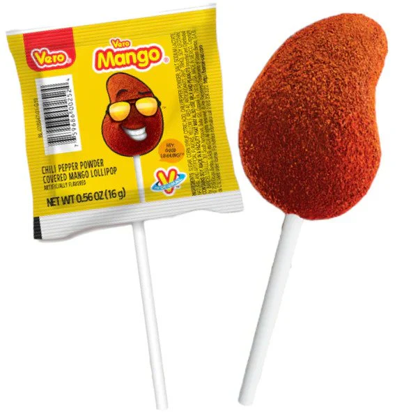

Abstract
Section 1
Section 2
Section 3
The third page is dedicated to the mango.
It also has strong synergy with chili powder to create a classic desert/drink: mangonada, along with the lollipop pictured below.
known for being incredibly sweet as well
   